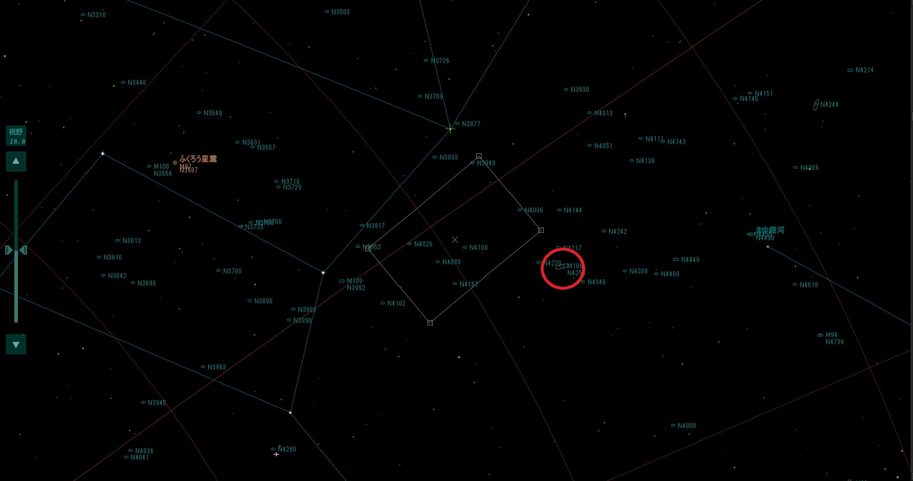
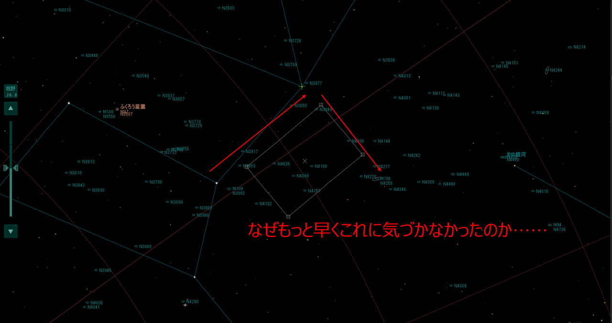
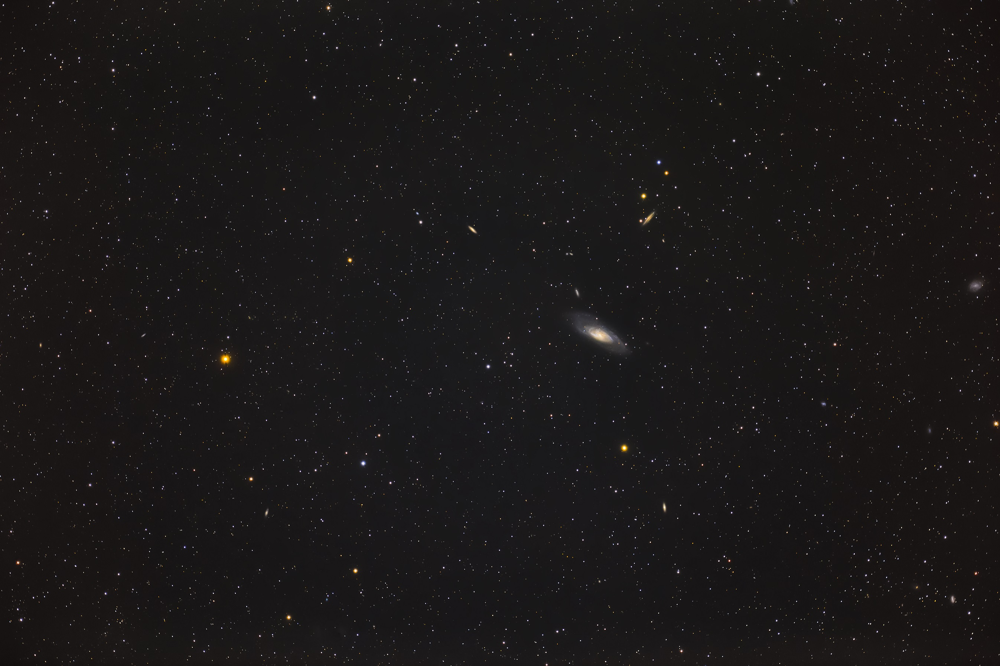
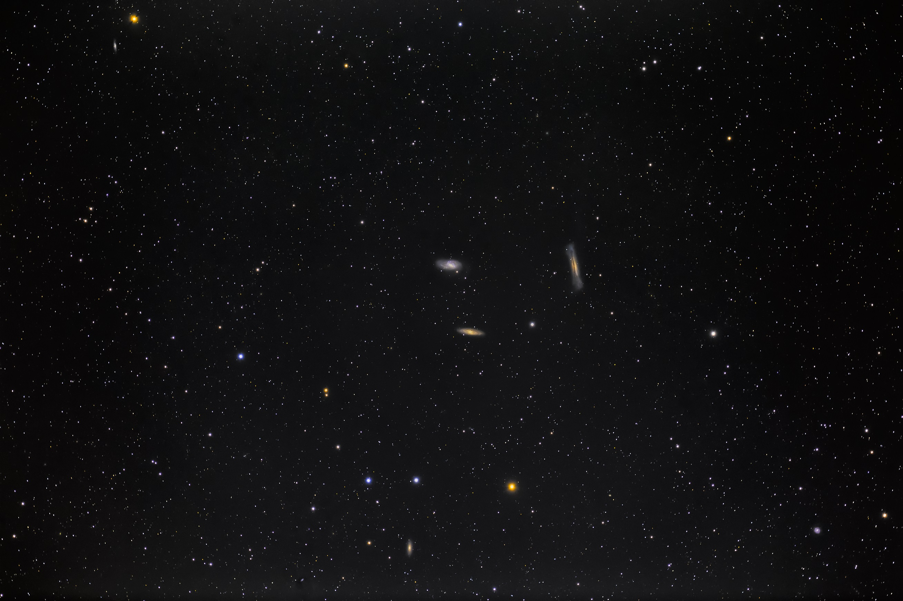

<!DOCTYPE html>
<html>

<head><meta name="generator" content="Hexo 3.8.0">
  <meta charset="utf-8">
  
  <title>FSQ85-EDP ファーストライト！ | ほしよみ大学生のブログ</title>
  <meta name="viewport" content="width=device-width">
  <meta name="description" content="あいさついつもお世話になっている方からの遠征のお誘いを受け，23日の日曜日，当日の遠征で FSQ-85EDP のファーストライト（買ってから一ヶ月以上経ちました…）を決行するために必要なパーツを揃えるために秋葉原へ行きました．">
<meta name="keywords" content="写真,天体写真,機材,鏡筒,遠征記">
<meta property="og:type" content="article">
<meta property="og:title" content="FSQ85-EDP ファーストライト！">
<meta property="og:url" content="http://dabokun.github.io/2020/02/24/00000030-fsq-first-light/index.html">
<meta property="og:site_name" content="ほしよみ大学生のブログ">
<meta property="og:description" content="あいさついつもお世話になっている方からの遠征のお誘いを受け，23日の日曜日，当日の遠征で FSQ-85EDP のファーストライト（買ってから一ヶ月以上経ちました…）を決行するために必要なパーツを揃えるために秋葉原へ行きました．">
<meta property="og:locale" content="ja">
<meta property="og:image" content="http://dabokun.github.io/2020/02/24/00000030-fsq-first-light/card.jpg">
<meta property="og:updated_time" content="2020-10-28T17:41:22.000Z">
<meta name="twitter:card" content="summary_large_image">
<meta name="twitter:title" content="FSQ85-EDP ファーストライト！">
<meta name="twitter:description" content="あいさついつもお世話になっている方からの遠征のお誘いを受け，23日の日曜日，当日の遠征で FSQ-85EDP のファーストライト（買ってから一ヶ月以上経ちました…）を決行するために必要なパーツを揃えるために秋葉原へ行きました．">
<meta name="twitter:image" content="http://dabokun.github.io/2020/02/24/00000030-fsq-first-light/card.jpg">
<meta name="twitter:creator" content="@dabo_pic">
  
  <link rel="alternative" href="/atom.xml" title="ほしよみ大学生のブログ" type="application/atom+xml">
  
  
  <link rel="icon" href="/images/favicon.png">
  
  <link rel="stylesheet" href="/css/style.css">
  <!--[if lt IE 9]><script src="//html5shiv.googlecode.com/svn/trunk/html5.js"></script><![endif]-->
  
</head></html>
<body>
  <div id="container">
    <div class="mobile-nav-panel">
	<i class="icon-reorder icon-large"></i>
</div>
<header id="header">
	<h1 class="blog-title">
		<a href="/">ほしよみ大学生のブログ</a>
	</h1>
	<nav class="nav">
		<ul>
			<li><a href="/">Home</a></li><li><a href="/categories">Categories</a></li><li><a href="/tags">Tags</a></li><li><a href="/archives">Archives</a></li><li><a href="/about">About</a></li><li><a href="/work">Work</a></li>
			<li><a id="nav-search-btn" class="nav-icon" title="Search"></a></li>
			<li><a href="https://github.com/dabokun"></a>
			</li>
			<li><a href="https://twitter.com/dabo_pic"></a></li>
			<li><a href="/atom.xml" id="nav-rss-link" class="nav-icon" title="RSS Feed"></a>
			</li>
		</ul>
	</nav>
	<div id="search-form-wrap">
		<form action="//google.com/search" method="get" accept-charset="UTF-8" class="search-form"><input type="search" name="q" class="search-form-input" placeholder="Search"><button type="submit" class="search-form-submit">&#xF002;</button><input type="hidden" name="sitesearch" value="http://dabokun.github.io"></form>
	</div>
</header>
    <div id="main">
      <article id="post-00000030-fsq-first-light" class="post">
	<footer class="entry-meta-header">
		<span class="meta-elements date">
			<a href="/2020/02/24/00000030-fsq-first-light/" class="article-date">
  <time datetime="2020-02-24T12:35:35.000Z" itemprop="datePublished">2020-02-24</time>
</a>
		</span>
		<span class="meta-elements author">astr0dab0</span>
		<div class="commentscount">
			
			<a href="http://dabokun.github.io/2020/02/24/00000030-fsq-first-light/#disqus_thread" class="article-comment-link">Comments</a>
			
		</div>
	</footer>
	
	<header class="entry-header">
		
  
    <h1 class="article-title entry-title" itemprop="name">
      FSQ85-EDP ファーストライト！
    </h1>
  

	</header>
	<div class="entry-content">
		
		
		<div id="toc" class="toc-article">
			<p class="toc-title">目次</p>
			<ol class="toc"><li class="toc-item toc-level-3"><a class="toc-link" href="#あいさつ"><span class="toc-number">1.</span> <span class="toc-text">あいさつ</span></a></li><li class="toc-item toc-level-3"><a class="toc-link" href="#余談"><span class="toc-number">2.</span> <span class="toc-text">余談</span></a></li><li class="toc-item toc-level-3"><a class="toc-link" href="#買ったもの"><span class="toc-number">3.</span> <span class="toc-text">買ったもの</span></a></li><li class="toc-item toc-level-3"><a class="toc-link" href="#天城へ"><span class="toc-number">4.</span> <span class="toc-text">天城へ</span></a></li><li class="toc-item toc-level-3"><a class="toc-link" href="#FSQ-を使ってみて"><span class="toc-number">5.</span> <span class="toc-text">FSQ を使ってみて</span></a><ol class="toc-child"><li class="toc-item toc-level-4"><a class="toc-link" href="#良かった点"><span class="toc-number">5.1.</span> <span class="toc-text">良かった点</span></a></li><li class="toc-item toc-level-4"><a class="toc-link" href="#課題"><span class="toc-number">5.2.</span> <span class="toc-text">課題</span></a></li></ol></li></ol>
		</div>
		
		<h3 id="あいさつ"><a href="#あいさつ" class="headerlink" title="あいさつ"></a>あいさつ</h3><p>いつもお世話になっている方からの遠征のお誘いを受け，23日の日曜日，当日の遠征で FSQ-85EDP のファーストライト（買ってから一ヶ月以上経ちました…）を決行するために必要なパーツを揃えるために秋葉原へ行きました．</p>
<a id="more"></a>
<h3 id="余談"><a href="#余談" class="headerlink" title="余談"></a>余談</h3><p>いきなり天文とは全く関係のない余談なのですが，パーツ買いの前に「さよならの朝に約束の花を飾ろう（通称『さよ朝』）」の復活上映が秋葉原 UDX シアターであるということで，チケットを取って見に行ってきました．<br>この作品，アニメ映画なのですが，「人がなぜ人と出会い，人を愛し，人と別れ，生きるのか」という大きなテーマが根本にありまして，「愛」がもつ光と闇，暖かさ，冷たさ，切なさを同時に見ることができ，他作品に比べあまりメジャーではないもののコアな層に人気がある作品になっています．昨日24日で公開から2周年ということなのですが，私が最初に見たのは昨年夏のことで，とても素晴らしかった記憶がありこの日も2回目を見に行きました．ストーリーを知っているので，開始15分程度のタイトルコールから既に涙溢れ（他の観客の方からも鼻をすする音が聞こえてきました），ラストまでほぼ泣きっぱなしというなかなか他には無い映画でした．エンディングが終わってからは自然と拍手が湧き，周りの観客はほぼ全員号泣，中には顔を真っ赤にしておいおい泣いている人もいて，愛されている作品だと感じました．<br>2回目を見ることで，初見ではきちんと気づいて飲み込めていなかった設定や描写を知ることができたのも良かったですね．とにかく最近のアニメ映画の中では個人的には最高峰だと思っています．まだご覧に鳴っていない方は是非．</p>
<div class="twitter-wrapper"><blockquote class="twitter-tweet"><a href="https://twitter.com/dabo_pic/status/1231441996230709248" target="_blank" rel="noopener"></a></blockquote></div><script async defer src="//platform.twitter.com/widgets.js" charset="utf-8"></script>
<h3 id="買ったもの"><a href="#買ったもの" class="headerlink" title="買ったもの"></a>買ったもの</h3><p>それはそれでおいておいて，真っ赤に泣き腫らした目でスターベース東京さんへ．必要なカメラマウント DX-WR(EOS)，鏡筒バンド(95S-GT)，鏡筒バッグ(屈折用S)を買いまして，お昼をとってから一旦帰宅．<br>仮眠をとり，迎えが来てくれるまで少し組み立てて使用感を確認．</p>
<div class="twitter-wrapper"><blockquote class="twitter-tweet"><a href="https://twitter.com/dabo_pic/status/1231473726065008640" target="_blank" rel="noopener"></a></blockquote></div><script async defer src="//platform.twitter.com/widgets.js" charset="utf-8"></script>
<p>カメラを構える形で持ってみるとかなり重く，飛行機撮影は苦労するなと思ったり…笑．</p>
<h3 id="天城へ"><a href="#天城へ" class="headerlink" title="天城へ"></a>天城へ</h3><p>今回はスターベースで働いてるM君とそのお友達も同行するということで，それぞれ私の地元周辺で拾い（わざわざこちらまで来ていただいてありがたい限りです），天城高原へ向かいました．途中網代のガストで夕食をとり，ささっといつもの駐車場へ．<br>出発が19時過ぎだったこともあり，到着は22時半を過ぎた頃でした．駐車場は三連休中日の夜，快晴とあって大繁盛でした．天城といえど，2月ということでかなり寒さがありました．防寒をサボったので朝まで凍えることになりました．少し明るい（最近の天城は明るい印象です）ですが，到着時のシーイングは良かったように思います．<br>現地では既に何度かお会いしている<a href="https://twitter.com/ShonanAstroPhot" target="_blank" rel="noopener">けーたろさん</a>や<a href="https://twitter.com/magicalflute77" target="_blank" rel="noopener">Aramisさん</a>の他，<a href="https://twitter.com/kyuri_shumi" target="_blank" rel="noopener">きゅうりさん</a>や<a href="https://twitter.com/starphoto_nabe" target="_blank" rel="noopener">nabeさん</a>にも初めてお会いすることができました．ご挨拶どうもありがとうございましたm(<em> </em>)m．</p>
<div class="twitter-wrapper"><blockquote class="twitter-tweet"><a href="https://twitter.com/dabo_pic/status/1231585007610679296" target="_blank" rel="noopener"></a></blockquote></div><script async defer src="//platform.twitter.com/widgets.js" charset="utf-8"></script>
<p>ドヤ顔で自撮りをかまし撮影準備を開始．<br>FSQ の使用感はなかなか良く，P鏡筒である(?)こともあって撮影システムを組むのはかなり楽でした．組み上げ，極軸合わせまではほぼいつもどおりうまくいったのですが，問題なのは導入．450mm と春の銀河を撮るにしては広角なので，ある程度大きな M106 でも撮るかと思っていたのですが，いざ導入しようと思うと全然入らない．これまで135mmでお気楽でやっていたツケです．1時間ほどウンウン言いながら知り合いの方に見せていただいた星図とにらめっこしていたのですが，ふと気づきました．</p>
<p></p>
<p>ここにステラナビゲータさんで表示したおおぐま座のおしり部分があります．導入したいのは赤丸の部分です．何かに気づきませんか？<br>そうです！おおぐま座χ星が，目標天体とほぼ同じ赤緯にあるではあーりませんか（なぜもっと早く気が付かなかったのか）！　そしてこのχ星は北斗七星を構成するγ星(フェクダ)と似たような赤経上にありますね．</p>
<p></p>
<p>つまりこのように，γ星(ライブビューで見える，撮影するとM109が近くに写るのでわかりやすいです)→(赤緯モーター)→χ星(これもライブビューで写ります)→(赤経モーター)→M106という風に導入できるわけですね．また一つ勉強になりました．<br>ステラナビゲータでシミュレーションしてみると，エクステンダーをつけた680mmでもこの方法で導入できそうですね．1000mm近くなってくるとγ星→χ星を一度にやるのがちょっと厳しそうですので，おとなしくファインダーを使うなりしたほうが無難です．というわけでちゃんと導入できたので，本撮影開始．</p>
<p></p>
<div style="text-align: center;">
”M106 Galaxy”<br>
2020年2月24日 午前0時51分～ 天城高原ゴルフコースにて<br>
タカハシ FSQ-85EDP (450mm F5.3)<br>
Canon EOS 6D<br>
ISO 3200 / 210s * 22 = 77 min<br>
タカハシ EM-11 Temma2Jr. ノータッチガイド<br>
ステライメージ8 / Adobe Lightroom CC / Photoshop CC<br><br>
</div>

<p>結局すぐに子午線を迎えてしまったので，1時間程度の露光になりましたが，初めてにしては上出来です．改めてしっかり現像してみると，この筒のすごさがよく分かりました．天の川や星雲を撮影するのが楽しみです（今回バンビも撮ろうかと思ったのですが，天の川がしっかり上ってくるのは薄明前後になってしまう &amp; 眠すぎたのでやめました）．<br>その後はトリプレットを導入して露光開始．こちらの導入は M106 に比べると簡単ですね．</p>
<p></p>
<div style="text-align: center;">
”Triplet―M66 Group”<br>
2020年2月24日 午前2時30分～ 天城高原ゴルフコースにて<br>
タカハシ FSQ-85EDP (450mm F5.3)<br>
Canon EOS 6D<br>
ISO 4000 / 240s * 1 + 180s * 30 = 94 min<br>
タカハシ EM-11 Temma2Jr. ノータッチガイド<br>
ステライメージ8 / Adobe Lightroom CC / Photoshop CC<br><br>
</div>

<p>「M65, 66, ハンバーガー」のトリオです．ハンバーガーの旗(アホ毛みたいな？)を出すのは厳しかったのでやめました笑．またしっかり撮る機会にやりたいと思います．</p>
<h3 id="FSQ-を使ってみて"><a href="#FSQ-を使ってみて" class="headerlink" title="FSQ を使ってみて"></a>FSQ を使ってみて</h3><p>以下に今回の FSQ ファーストライト(撮影)で良かった点と課題を書いておきます．</p>
<h4 id="良かった点"><a href="#良かった点" class="headerlink" title="良かった点"></a>良かった点</h4><ul>
<li>使っている EM-11 とよく合う．カッコいい．</li>
<li>撮影までのセッティングがひじょうに簡単で楽．特に難しいことは何も考える必要がない．</li>
<li>筒がある程度大きいのでバッテリー交換が容易（当たり前体操，しかし 135mm だとこれが上手くいかなかったのです…）．</li>
<li>しっかり現像してみると改めて分かるが，やはり星像も色乗りの良さもピカイチ（他と比較したわけではないですが…）．補正レンズなし，ダークなし，フラットなしフルサイズ(フラットについては，Lightroom で補正後，背景を黒く落とすことで誤魔化しています)で上のような写真が撮れることを考えていただければお分かりかと思います．</li>
<li>課題にもつながることですが，長焦点なので導入が難しい分，撮りたい対象以外の知識もつくし，やはり楽しい．</li>
</ul>
<h4 id="課題"><a href="#課題" class="headerlink" title="課題"></a>課題</h4><ul>
<li>全然関係ないですが，自分の 6D のセンサ汚すぎ（クリーンに出しましょう）．</li>
<li>冷えるとめちゃくちゃ冷たい（手袋をしましょう）．</li>
<li>赤緯方向のバランス．カメラをつけるとどうしても接眼側が重くなる．これは専用のプレート(KBプレートS)を買うことで解決します．</li>
<li>450mm なので3分～4分の露光時間でも少し流れてしまう．エクステンダーまで揃えることを考え，ちゃんとガイドを組まないといけませんね．</li>
<li>長焦点なので導入が難しい（良かった点に書いたとおり，良い部分でもある）．</li>
</ul>
<p>以上です．まだまだ色々伸び代があるシステムなので，ここから数年かけてのんびり楽しんでいこうと思います．<br>それでは．</p>

		
	</div>
	<footer class="article-footer">
		<a href="https://twitter.com/intent/tweet?text=FSQ85-EDP%20%E3%83%95%E3%82%A1%E3%83%BC%E3%82%B9%E3%83%88%E3%83%A9%E3%82%A4%E3%83%88%EF%BC%81｜%E3%81%BB%E3%81%97%E3%82%88%E3%81%BF%E5%A4%A7%E5%AD%A6%E7%94%9F%E3%81%AE%E3%83%96%E3%83%AD%E3%82%B0&url=http://dabokun.github.io/2020/02/24/00000030-fsq-first-light/" class="twitter-share-button" target="_blank" title="Twitter"></a>
		<script async src="https://platform.twitter.com/widgets.js" charset="utf-8"></script>

		<div id="fb-root"></div>
		<script async defer crossorigin="anonymous" src="https://connect.facebook.net/ja_JP/sdk.js#xfbml=1&version=v4.0"></script>
		<div class="fb-share-button" data-href="http://dabokun.github.io/2020/02/24/00000030-fsq-first-light/" data-layout="button_count" data-size="small"><a target="_blank" href="https://www.facebook.com/sharer/sharer.php?u=https%3A%2F%2Fdabokun.github.io%2F&amp;src=sdkpreparse" class="fb-xfbml-parse-ignore">シェア</a></div>
	</footer>
	<footer class="entry-footer">
		<div class="entry-meta-footer">
			<span class="category">
				
  <div class="article-category">
    <a class="article-category-link" href="/categories/expedition/">遠征記</a>
  </div>

			</span>
			<span class=" tags">
				
  <ul class="article-tag-list"><li class="article-tag-list-item"><a class="article-tag-list-link" href="/tags/photography/">写真</a></li><li class="article-tag-list-item"><a class="article-tag-list-link" href="/tags/astrophotography/">天体写真</a></li><li class="article-tag-list-item"><a class="article-tag-list-link" href="/tags/equipments/">機材</a></li><li class="article-tag-list-item"><a class="article-tag-list-link" href="/tags/expedition/">遠征記</a></li><li class="article-tag-list-item"><a class="article-tag-list-link" href="/tags/telescope/">鏡筒</a></li></ul>

			</span>
		</div>
	</footer>
	
	
<nav id="article-nav">
  
    <a href="/2020/03/04/00000031-2019-12-otaki/" id="article-nav-newer" class="article-nav-link-wrap">
      <strong class="article-nav-caption">Newer</strong>
      <div class="article-nav-title">
        
          【遠征記】2019年12月 おんたけ2240（天文ガイド入選）
        
      </div>
    </a>
  
  
    <a href="/2020/01/07/00000029-fsp85edp-purchased/" id="article-nav-older" class="article-nav-link-wrap">
      <strong class="article-nav-caption">Older</strong>
      <div class="article-nav-title">
        
          タカハシ FSQ-85EDP 購入しました
        
      </div>
    </a>
  
</nav>

	
</article>


<section id="comments">
	<div id="disqus_thread">
		<noscript>Please enable JavaScript to view the <a href="//disqus.com/?ref_noscript">comments powered by
				Disqus.</a></noscript>
	</div>
</section>

    </div>
    <div class="mb-search">
  <form action="//google.com/search" method="get" accept-charset="utf-8">
    <input type="search" name="q" results="0" placeholder="Search">
    <input type="hidden" name="q" value="site:dabokun.github.io">
  </form>
</div>
<footer id="footer">
	<h1 class="footer-blog-title">
		<a href="/">ほしよみ大学生のブログ</a>
	</h1>
	<span class="copyright">
		&copy; 2021 astr0dab0<br>
		Modify from <a href="http://sanographix.github.io/tumblr/apollo/" target="_blank">Apollo</a> theme, designed by <a href="http://www.sanographix.net/" target="_blank">SANOGRAPHIX.NET</a><br>
		Powered by <a href="http://hexo.io/" target="_blank">Hexo</a>
	</span>
</footer>
    
<script>
  var disqus_shortname = 'astr0dab0';
  
  var disqus_url = 'http://dabokun.github.io/2020/02/24/00000030-fsq-first-light/';
  
  (function(){
    var dsq = document.createElement('script');
    dsq.type = 'text/javascript';
    dsq.async = true;
    dsq.src = '//go.disqus.com/embed.js';
    (document.getElementsByTagName('head')[0] || document.getElementsByTagName('body')[0]).appendChild(dsq);
  })();
</script>


<script src="//ajax.googleapis.com/ajax/libs/jquery/2.0.3/jquery.min.js"></script>


<link rel="stylesheet" href="/fancybox/jquery.fancybox.css" media="screen" type="text/css">
<script src="/fancybox/jquery.fancybox.pack.js"></script>


<script src="/js/script.js"></script>
  </div>
</body>
</html>